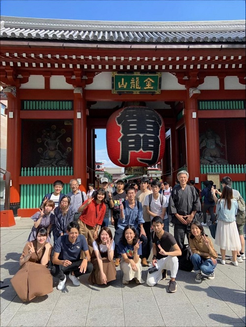
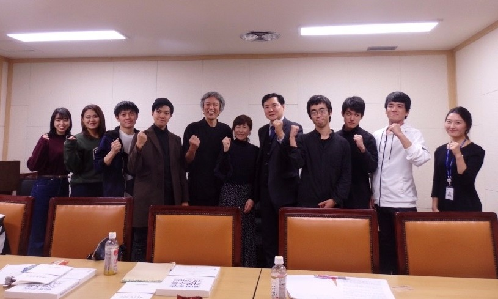
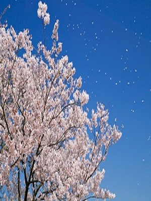
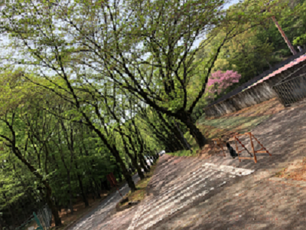
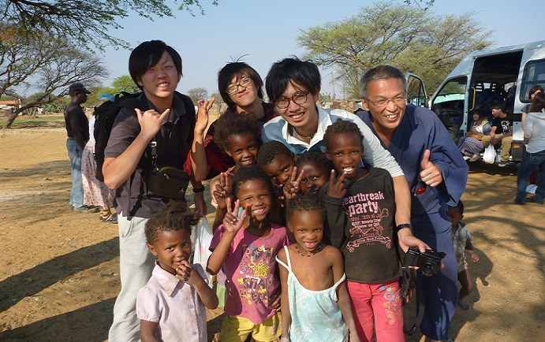

2019年 ゼミ合宿

2019年のゼミ合宿1日目は法政大学市谷キャンパスに立命館大学の南野ゼミの皆さんをお招きし、両ゼミの共通テーマである「海外における労働問題」について、お互いの研究の発表を行いました。
また特別ゲストとして、テーマに関連するブラック企業問題に取り組む労働組合の方のお話を聞き、1日目の行事の終了となりました。
2日目は南野ゼミと一緒に東京スカイツリーへ行きました。多くの人が持参の一眼カメラを持って上空からの景色を写真に収めました。
この日はお昼には自由解散となり、それぞれ親しい仲間たちと花やしきや浅草へ遊びに行きました。
2019年 学部研究発表

2019年の学部研究発表会では、ベーシックインカムを試験的に実施していた韓国の京畿道という地域について発表しました。京畿道は2019年から満24歳のすべての若者に対して、四半期ごとに25万ウォン（約22,200円）を配布しています。
なぜ、24歳の若者に限定されたのか？ それは、若者の貧困問題が挙げられます。当時、就業した若者の約3分の2は非正規雇用という状況でした。ゆえに、大学を卒業し少ない給料で働き始める24歳に限定されたのです。
2020年 春学期

2020年の春学期はコロナの感染状況を踏まえ、hoppiiの掲示板を主なツールとして活動しました。新しくゼミに入ってきた2、3年生とともに、ベーシックインカムってなんだろう？財源はどこからくるの？SDGsとの関連性は？などなど、様々な疑問を出し合ったり、時には先生の執筆する論文や著書を読んで理解を深めました。
また、コロナへの対策として10万円の特別給付金が全国民に配られたことを受け、友達や家族にその使い道や感想をインタビューしたり、ベーシックインカムについて知っているかどうかについても聞いてもらいました。
やはり、ベーシックインカムを知っている人はほとんどいない結果となりましたが、今回の特別給付金を受け、多くの方がベーシックインカムの可能性を感じていることがわかりました。
2020年 秋学期

2020年の秋学期も、春学期と同様にオンラインでの授業となりましたが、掲示板ではなくzoomへとツールを変えました。
秋学期は11/24の学部研究発表会に向けた活動を10月～11/24まで行い、その後は1月末に提出する個人論文の作成を行いました。
11/24の学部研究発表会に向けては、ベーシックインカムを分かりやすく伝える①班と各国のコロナ対策からみえるベーシックインカムの可能性を探る②班にわかれ活動を行いました。
どちらの班も約1ヶ月半という短い時間の中で、何度も班員と話し合い、協力し発表を完成させることができました。
2020年 学部研究発表会

2020年の学部研究発表会は、コロナ対策によりzoomを用いた発表となりました。①班と②班がそれぞれ30分使って各自の発表を行いました。
前年の学部研究発表会はPowerPointのみの発表でしたが、今回は①班ではベーシックインカムの導入的説明として、ピクミン（自作）を用いた絵本を作成し、それを外部の方（現保育士）に朗読してもらった動画を流しました。
数分の動画でしたが、「少しでもベーシックインカムという言葉を覚えていってほしい。」というゼミ生の意見により、大学生に絵本を読み聞かせるという、思い切った試みでした。
下記に学部研究発表会で利用したPowerPointを載せます。興味のある方は是非ご覧ください！
絵本『ピクミンと学ぶベーシックインカム』 日本でベーシックインカムを実現するには のコロナ対策からみえるベーシックインカムの実現可能性
海外研修 (0000年～0000年)

岡野内ゼミでは毎年希望者のみで海外への研修旅行を実施しています。貧困調査のためにアフリカに行ったり、ベーシックインカム実施国へ赴いたりと、主にベーシックインカムに関連のある国へ行きます。
去年は若者に対してベーシックインカムを行っていた中国の京畿道へ行き、現地の方のお話を聞きました。
今年はコロナの感染状況から海外への研修旅行はできませんでした。これからも、まだまだ海外への渡航は難しいと思います。なので、今までの海外研修旅行のお話を先生から聞いてみてください。きっと面白い話がたくさん聞けますよ。（機関銃を向けられたことがあるとか…）